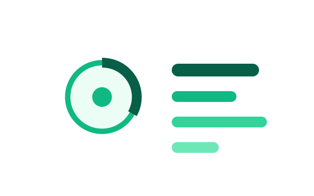
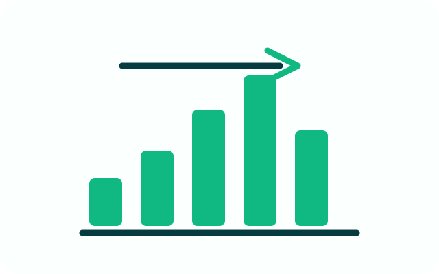
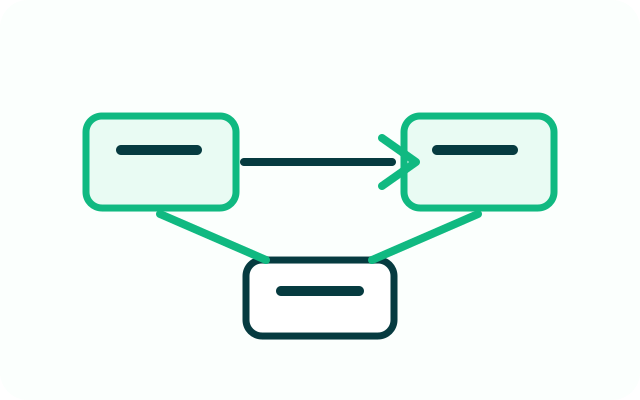

A locally trained PyTorch CNN with canvas input, MNIST preprocessing, Flask inference, confidence scores, and class probabilities.
A React, Flask, SQLite, and ECharts dashboard for crawler runs, deduplication, persisted records, and summaries.
A Python crawler and cleaned Top 100 dataset with ranks, years, ratings, categories, and source links.
A Requests and BeautifulSoup pipeline that archives structured trending-topic data as JSON.
An interactive introduction to GET parameters, POST bodies, JSON responses, CORS, and browser requests.
An in-memory table abstraction implementing CRUD operations and JSON persistence alongside SQL practice.
A GitHub Pages portfolio site for projects, physics simulations, and contact links.
Lightweight page-view tracking with GoatCounter across the portfolio site.

Animate classic sorting algorithms and compare comparisons, swaps, and runtime behavior.

Build simulated frontend-backend requests and inspect structured JSON responses.
